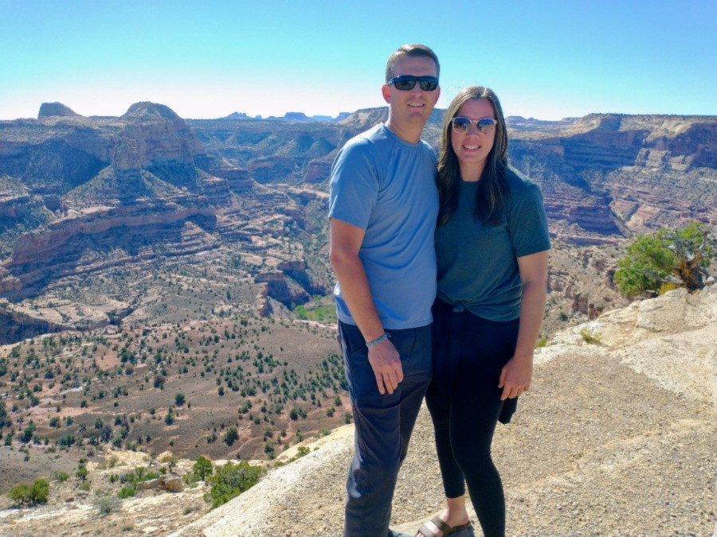
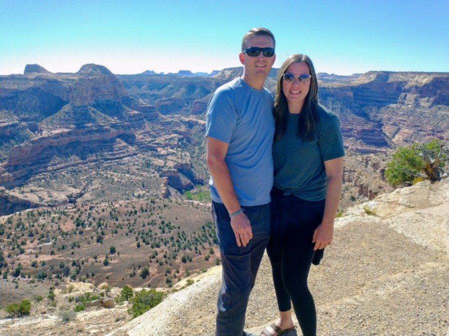

My name is Cathy and I am the Mama that bakes all the yummy goodness. One of my most favorite things about baking treats for you is that I get to know you! I love meeting new people and building good friendships with them. In fact, I already consider you my friend!
I run my business in a cute little town in Utah. For 30 years, I have been honing my baking skills so I can build treats with perfection for you! As a mom of five kids, I know what it takes to create something that will please the masses and it brings me great joy in providing for others. After eating my treats, I want you to feel like you just got a big hug from your own Mama.
Creating homestyle cookies are my jam. My products are perfect for large and small groups alike. Catering and special orders are right up my alley. I look forward to making friends with you through your stomach!